PostgreSQL · 核心原理图谱
进程级关系数据库内核:postmaster 每连接 fork 一 backend,共享内存协调,MVCC 多版本 + WAL 先写日志,代价优化 + 火山执行。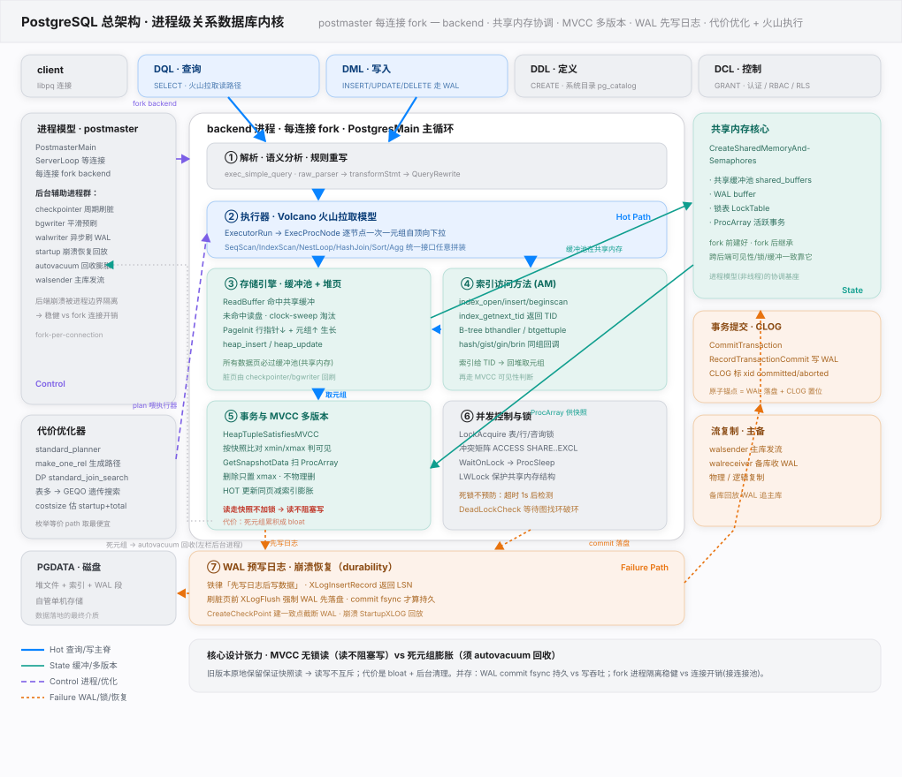
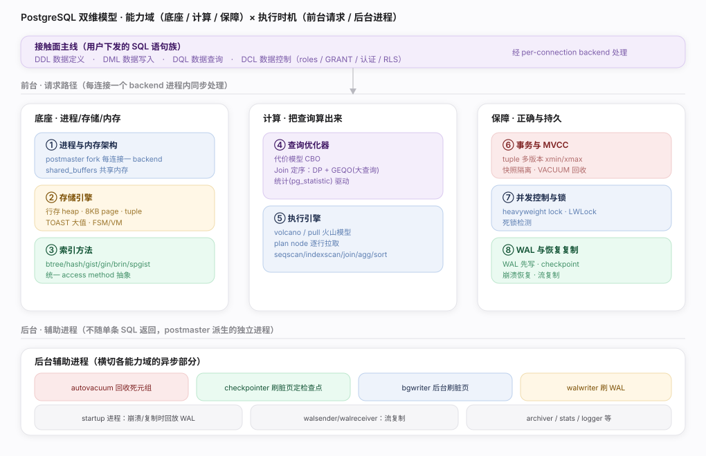
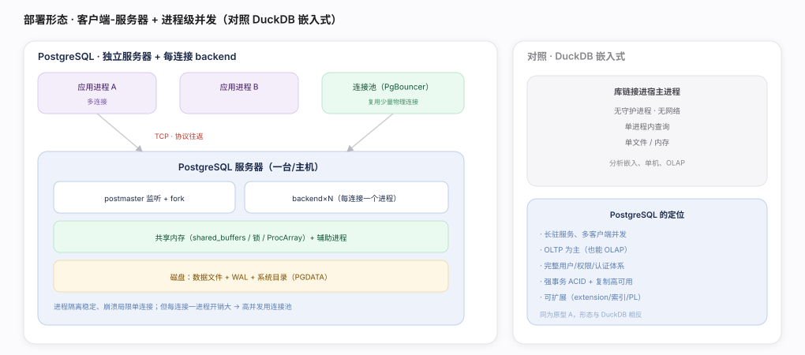
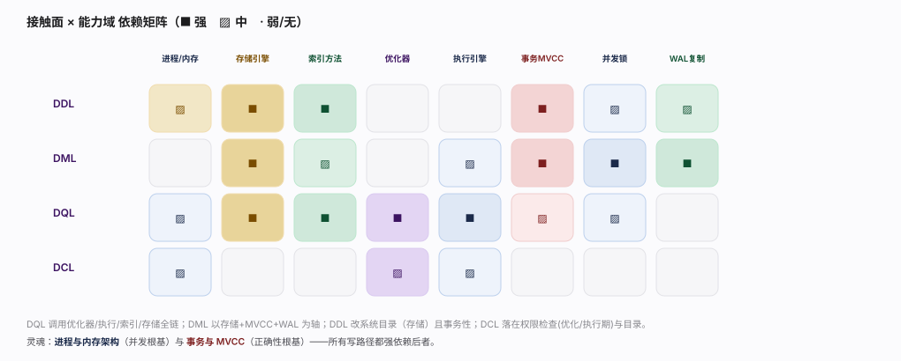
| 维度 | DuckDB | PostgreSQL |
|---|---|---|
| 部署形态 | 进程内嵌入库、无服务进程 | 独立服务器 + 每连接一个 backend 进程 |
| 并发模型 | 单进程多线程 morsel | 进程级并发（fork per connection）+ 共享内存 |
| 存储 | 列存、单文件、面向 OLAP | 行存 heap、8KB page、多文件、面向 OLTP |
| 执行 | push 向量化 | volcano / pull 火山模型（逐行拉取） |
| MVCC | UndoBuffer 版本链 + 乐观并发 | tuple 多版本 xmin/xmax + VACUUM 回收死元组 |
| 权限 | 无多用户 GRANT | 完整 roles + GRANT/REVOKE + pg_hba 认证 + RLS |
| 层 | 支撑能力域 | 一句话职责 | 内核锚点 |
|---|---|---|---|
| 底座 | 进程与内存架构 | postmaster fork backend、共享内存、辅助进程 | postmaster/、storage/ipc/ |
| 底座 | 存储引擎 | 行存 heap、8KB page、tuple、TOAST、FSM/VM | access/heap/、storage/ |
| 底座 | 索引方法 | btree/hash/gist/gin/brin/spgist + AM 抽象 | access/{nbtree,gin,gist,brin,hash,spgist} |
| 计算 | 查询优化器 | 代价模型 CBO、Join 定序 DP+GEQO、统计 | optimizer/ |
| 计算 | 执行引擎 | volcano/pull 火山模型、plan node | executor/ |
| 保障 | 事务与 MVCC | tuple xmin/xmax、快照隔离、VACUUM | access/heap/heapam_visibility.c、access/transam/ |
| 保障 | 并发控制与锁 | heavyweight lock、LWLock、死锁检测 | storage/lmgr/ |
| 保障 | WAL 与恢复复制 | WAL、checkpoint、崩溃恢复、流复制 | access/transam/xlog*.c、replication/ |
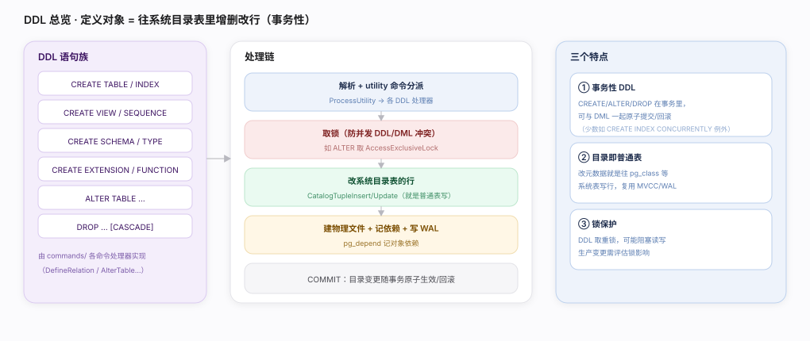
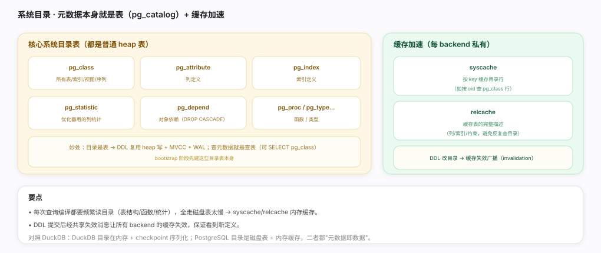
ProcessUtility 分派 → 取锁 → 改系统目录表行 → 建物理文件/记依赖/写 WAL。以系统目录（元数据即表）为主轴，事务性依赖事务与 MVCC、并发保护依赖并发控制与锁。核实基准：官方源码 postgres/src（commit 572c3b2）。ProcessUtility→standard_ProcessUtility→ProcessUtilitySlow 分派到 commands/ 处理器（DefineRelation/DefineIndex），取锁防并发后用 CatalogTupleInsert/Update 改目录行、建物理文件、recordDependencyOn 记 pg_depend 依赖、写 WAL，随事务原子提交/回滚；目录复用 MVCC/WAL，查询编译经 syscache/relcache 缓存加速、DDL 提交后广播失效消息——生产变更的关键是评估 DDL 取的锁级别（多数 ALTER/DROP 取 AccessExclusiveLock 会阻塞全表并挡住后续查询），加索引优先用非事务的 CONCURRENTLY。CREATE INDEX CONCURRENTLY：取 ShareUpdateExclusiveLock、不阻塞写（代价是更慢、非事务）。lock_timeout，避免 DDL 长时间排队引发查询雪崩。| 场景 | 机理 | 后果 / 应对 |
|---|---|---|
| AccessExclusiveLock | 多数 ALTER TABLE 子命令、DROP、TRUNCATE、VACUUM FULL 与一切锁互斥 | 阻塞该表全部读写、排队时挡住其后所有新查询；一次不当 ALTER 可瞬间雪崩 |
| ShareUpdateExclusiveLock | CREATE INDEX CONCURRENTLY/ANALYZE/普通 VACUUM 与读写兼容 | 只互斥同类维护；生产加索引应优先它 |
| 失败与回滚 | 普通 DDL 失败随事务整体回滚（目录变更也是 MVCC tuple） | CREATE INDEX CONCURRENTLY 非事务多阶段、中途失败留 INVALID 索引需手动 DROP 重建 |
| 依赖阻断 | 裸 DROP 被依赖对象时 pg_depend 检查（RemoveRelations→performDeletion/performMultipleDeletions）报错 | 需 CASCADE 递归删或先删依赖方 |
| 建表物理落地 | DefineRelation→heap_create_with_catalog 既写 pg_class/pg_attribute 又建物理文件 | 两者在同一事务内一致提交 |
| 缓存失效广播 | 提交时 CacheInvalidateHeapTuple 登记失效，别的 backend 拿锁时 AcceptInvalidationMessages 消费 | 清过期 syscache/relcache，"改了目录、别的连接下次访问看到新定义" |
| DDL | 主要目录变更 | 备注 |
|---|---|---|
| CREATE TABLE | pg_class + pg_attribute + 建文件 | 事务性 |
| CREATE INDEX | pg_class + pg_index + 建索引文件 | CONCURRENTLY 非事务、不阻塞写 |
| ALTER TABLE ADD COLUMN | pg_attribute（多数不重写数据） | 加 volatile 默认值可能全表重写 |
| DROP ... CASCADE | 删目录行、按 pg_depend 递归 | RESTRICT 有依赖则拒绝 |
| CREATE EXTENSION | 注册一组对象 | 可插拔能力 |
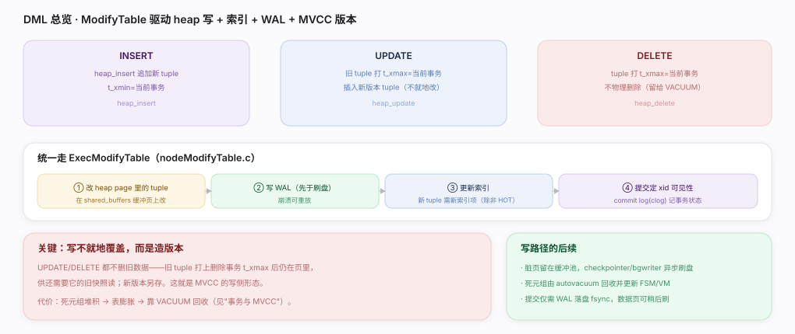
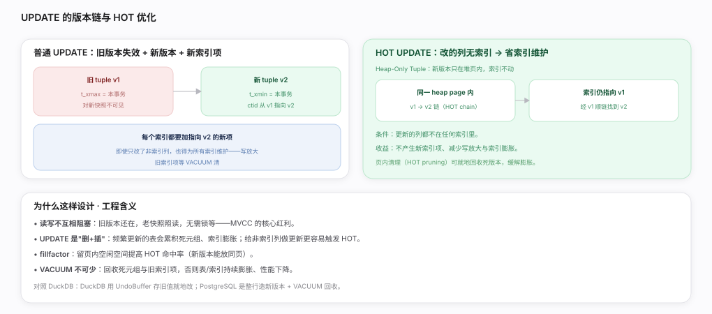
ExecModifyTable → heap 写 → 索引维护 → WAL → MVCC 版本。以存储引擎（heap tuple）与事务与 MVCC（xmin/xmax 多版本）为双轴，持久化靠 WAL 与恢复，死元组回收依赖后台 VACUUM。核实基准：官方源码 postgres/src（commit 572c3b2）。ExecModifyTable：INSERT heap_insert 追加新 tuple、UPDATE heap_update 给旧版本打 t_xmax 并另存新版本、DELETE heap_delete 打 t_xmax 不物理删——写不就地覆盖而是造 MVCC 版本，改动在缓冲页上做、先写 WAL（XLogInsert）、维护索引（ExecInsertIndexTuples；被改列全不命中索引时走 HOT 免索引维护）、提交经 CLOG 定可见性；旧版本供旧快照读、死元组由 VACUUM 后台回收，低 fillfactor 与"只更新非索引列"能提高 HOT 命中减少写放大与膨胀。fillfactor（建表/索引时）：留页内空闲提高 HOT 命中，写多的表可调低于 100。COPY（走 heap_multi_insert）而非逐行 INSERT；大事务减少提交次数。autovacuum_vacuum_scale_factor 等）按更新频率调，防膨胀。| 场景 | 机理 | 后果 / 应对 |
|---|---|---|
| 唯一约束/外键冲突 | 插索引项（ExecInsertIndexTuples）时报错、整语句回滚 | 执行期错误，EXPLAIN（不带 ANALYZE）看不到；ON CONFLICT 走推测插入先占位再回退 |
| 写写冲突阻塞 | 两事务 UPDATE 同一行，后者在 heap_update 取行锁等前者结束 | RC 下前者提交后重取最新版本再改；RR/Serializable 报序列化失败 |
| 索引写放大 | 非 HOT 的 UPDATE 要更新表上所有索引 | 索引越多 UPDATE 越慢；一张表十几个索引时高频更新成瓶颈 |
| 膨胀与页分裂 | HOT 落空（跨页）+ 关掉 autovacuum | 死元组与旧索引项堆积、表和 B-tree 膨胀、扫描跳过大量死行 |
| COPY vs 单行 INSERT | heap_multi_insert 一次锁页装多行、批量记 WAL | 大批量导入用 COPY 常快一个数量级；wal_level=minimal+同事务建表可跳过部分 WAL |
| 组件 | 职责 | 锚点 |
|---|---|---|
| ExecModifyTable / ExecInsert/Update/Delete | 写算子分派 | executor/nodeModifyTable.c:4625/874/2749/1847 |
| heap_insert / heap_update / heap_delete | 堆表写 + MVCC 标记 | access/heap/heapam.c:2004/3201/2717 |
| heap_multi_insert | 批量插入（COPY） | access/heap/heapam.c:2282 |
| ExecInsertIndexTuples | 维护索引项 | executor/execIndexing.c:311 |
| clog（commit log） | 记事务提交/回滚状态 | access/transam/clog.c |
| WAL | 先写日志 | access/transam/xloginsert.c:482 |
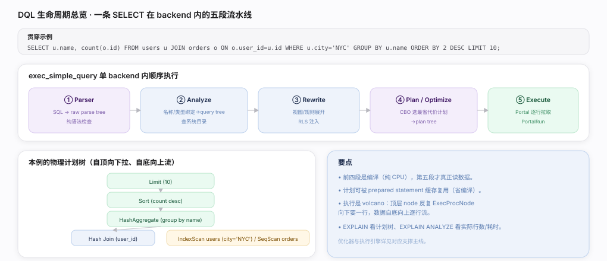
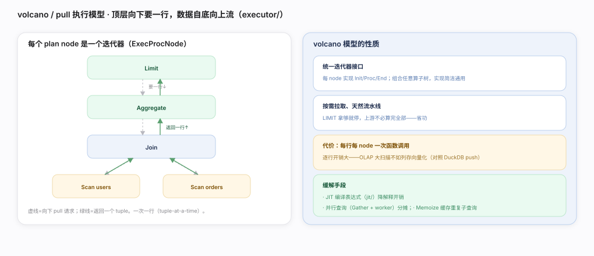
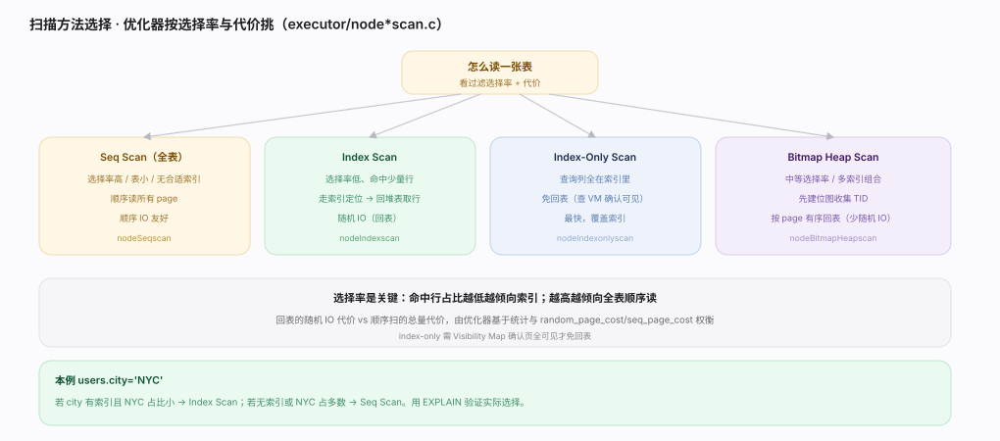
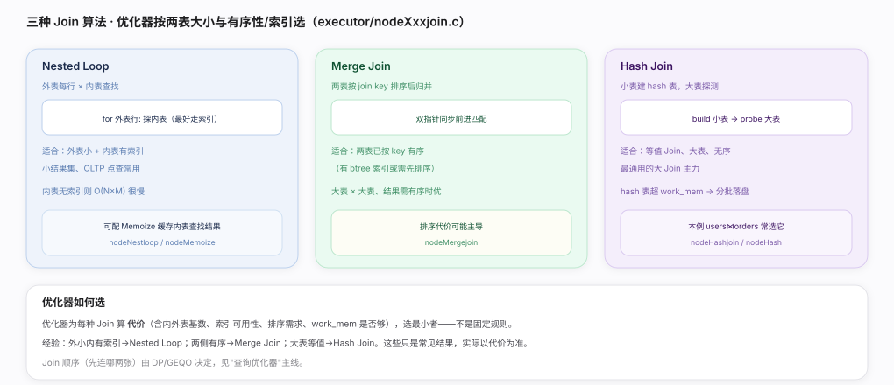
Parser → Analyze → Rewrite → Plan → Execute（tcop/postgres.c exec_simple_query:1030）。强依赖查询优化器（选计划）、执行引擎（volcano 执行）、索引方法与存储引擎（读取），跨事务时依赖事务与 MVCC（快照可见性）。核实基准：官方源码 postgres/src（commit 572c3b2）。pg_parse_query→parse_analyze→QueryRewrite→pg_plan_queries(CBO)→Portal 执行五段流水线：前四段编译成 plan tree（可缓存），执行由 Portal 驱动 volcano/pull 火山模型（ExecInitNode/ExecProcNode/ExecEndNode）逐行拉取；读表按选择率在 Seq/Index/IndexOnly/BitmapHeap 间用 cost_seqscan/cost_index 选、连接按代价在 NestLoop/Merge/Hash 间选、Join 顺序由 DP+GEQO 定，逐行开销靠 JIT、并行查询与 Memoize 缓解——一切选择以优化器基于 pg_statistic 的代价估计为准，统计失真是坏计划头号原因。EXPLAIN (ANALYZE, BUFFERS)：看真实计划、行数估计误差与缓冲命中——调优第一手段。work_mem：排序/Hash 的内存上限；不够则落盘，影响 Join/Sort/Agg 选择，注意乘并发。random_page_cost/seq_page_cost：SSD 上调低 random_page_cost 使索引更受青睐。max_parallel_workers_per_gather：开并行查询分摊大扫描。ANALYZE/autovacuum），多列相关用 CREATE STATISTICS。| 场景 | 机理 | 后果 / 应对 |
|---|---|---|
| 编译期 vs 执行期错误 | 绑定失败（列不存在/类型不匹配）在 Analyze 报错；约束冲突、除零、work_mem 落盘在 Execute 才暴露 | EXPLAIN（不带 ANALYZE）只跑到计划、不触发执行期错误 |
| 估计失真选坏计划 | cost_* 全依赖 pg_statistic；统计陈旧或多列相关致基数估偏 | 该走 Hash Join 选成 Nested Loop、慢几个数量级；多列相关用 CREATE STATISTICS |
| work_mem × 并发爆内存 | 每个 Sort/Hash/Agg 节点各占最多 work_mem | 一条复杂计划多个此类节点再乘并发连接数，设太大会 OOM |
| 游标与快照 | RR/Serializable 下游标沿用事务快照 | 长时间持有游标等价长事务，压住死元组回收 |
| 类别 | node | 说明 |
|---|---|---|
| 扫描 | SeqScan / IndexScan / IndexOnlyScan / BitmapHeapScan | 读表 |
| 连接 | NestLoop / MergeJoin / HashJoin | 连接两表 |
| 聚合 | Agg（Hash/Group）/ WindowAgg | 分组/窗口 |
| 排序/限量 | Sort / IncrementalSort / Limit | 排序、取前 N |
| 并行 | Gather / GatherMerge | 汇聚并行 worker 结果 |
| 其他 | Material / Memoize / Append / ModifyTable | 物化/缓存/合并/写 |
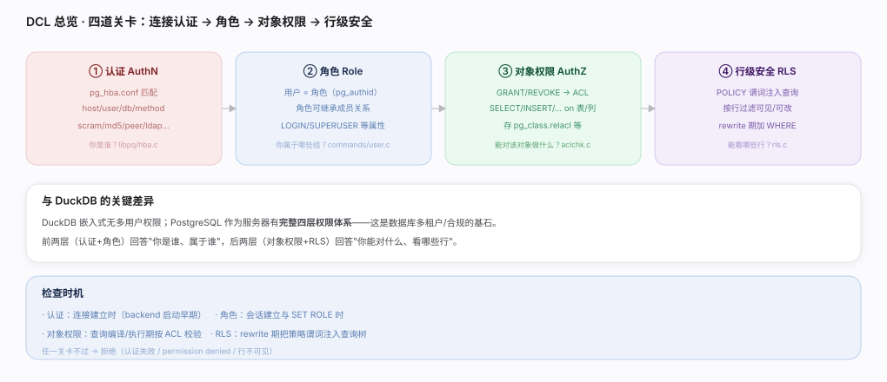
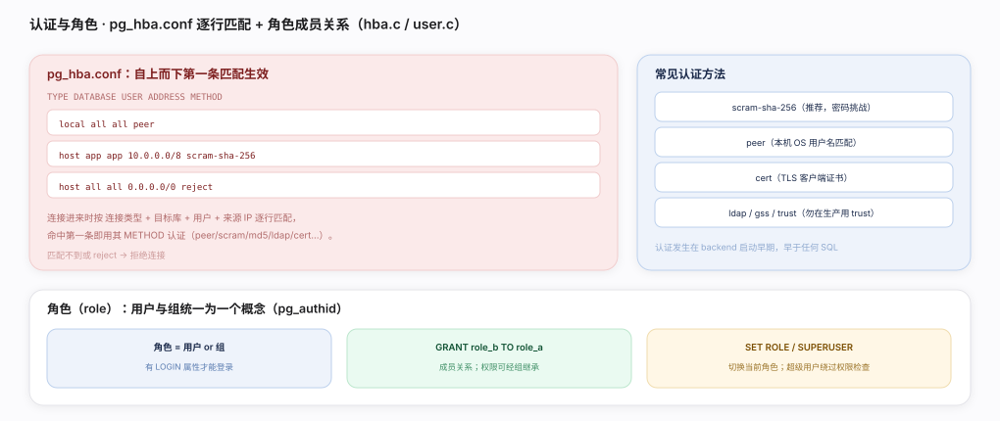
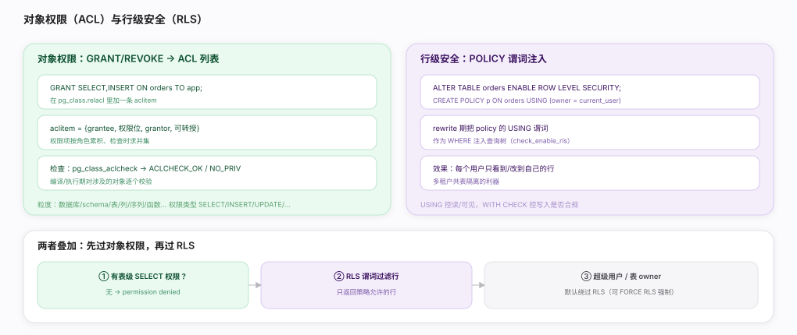
postgres/src（commit 572c3b2）。check_hba/ClientAuthentication，scram/peer/cert…）、角色(pg_authid，CreateRole)统一用户与组并经成员关系继承权限、GRANT/REVOKE 经 ExecuteGrantStmt→merge_acl_with_grant 把对象权限写进 relacl 的 ACL 由 pg_class_aclcheck 在编译/执行期校验、RLS 策略在 rewrite 期经 get_row_security_policies 把谓词注入查询按行过滤；先过对象权限再过 RLS、超级用户/owner 默认绕过 RLS（须 FORCE）——完整的认证+角色+权限+行级安全体系是它区别于嵌入式库的多租户合规基石。current_user/会话变量隔离，并按需 FORCE RLS。pg_ctl reload（reload 生效，无需重启）。ALTER DEFAULT PRIVILEGES 统一预设。| 场景 | 机理 | 后果 / 应对 |
|---|---|---|
| 认证失败早于 SQL | pg_hba 不匹配/口令错/SSL 不满足在 ClientAuthentication 直接断连 | 客户端收连接错误而非查询错误；改 pg_hba.conf 需 reload 才对新连接生效，已建连接不受影响 |
| 权限检查在计划期报错 | 无表权限 SELECT 在名称绑定/权限校验时即 permission denied | 不进执行；列级 GRANT 只授部分列时 SELECT * 因缺列权限失败 |
| RLS 静默过滤而非报错 | RLS 让不满足 USING 的行不可见 | INSERT 违反 WITH CHECK 报错，但 SELECT 只是少返回行，易误判"数据丢了" |
| owner/superuser 绕过 RLS | 表 owner 与超级用户默认不受 policy 约束 | 多租户须 ALTER TABLE ... FORCE ROW LEVEL SECURITY 才对 owner 生效 |
| 默认权限陷阱 | PUBLIC 默认对新库/schema 有部分权限 | 新建对象权限用 ALTER DEFAULT PRIVILEGES 统一，否则逐个补易漏 |
| 层 | 载体 | 命令 | 锚点 |
|---|---|---|---|
| 认证 | pg_hba.conf | （编辑文件 + reload） | libpq/hba.c:2338 |
| 角色 | pg_authid | CREATE ROLE / GRANT role | commands/user.c:133 |
| 对象权限 | relacl（aclitem） | GRANT/REVOKE ON 对象 | catalog/aclchk.c:395 |
| 默认权限 | pg_default_acl | ALTER DEFAULT PRIVILEGES | catalog/aclchk.c |
| 行级安全 | pg_policy | CREATE POLICY | rewrite/rowsecurity.c:98 |
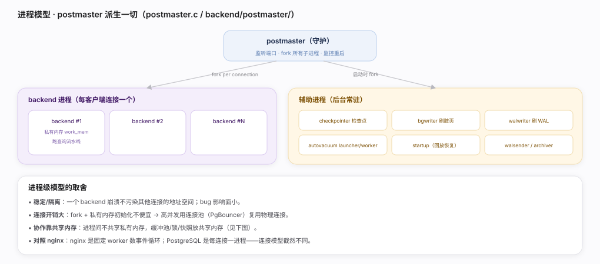
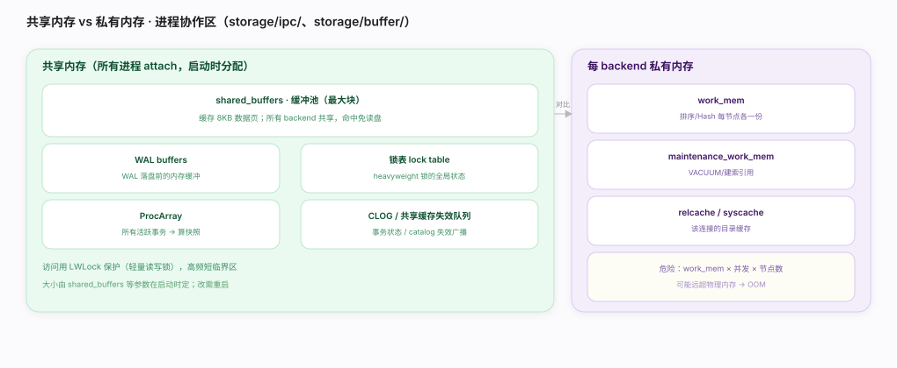
postgres/src（commit 572c3b2）。PostmasterMain/ServerLoop）监听端口、每连接 BackendStartup fork 一个私有内存 backend 跑查询、并 StartChildProcess 拉起 checkpointer/bgwriter/walwriter/autovacuum 等辅助进程，崩溃经 process_pm_child_exit+PostmasterStateMachine 收尸重启；进程间只能经 CreateSharedMemoryAndSemaphores 划出的共享内存（shared_buffers/WAL buffers/锁表/ProcArray）协作、由 LWLock 分区保护，backend 各自持有 work_mem/relcache 私有内存——隔离稳定但每连接开销大，高并发靠连接池、异常崩溃会触发全库共享内存重置。shared_buffers：缓冲池大小，常设物理内存 25%（余量留给 OS page cache）。max_connections：进程数上限；高并发用连接池（PgBouncer）而非一味调高。work_mem：每算子节点各占一份，注意乘并发；maintenance_work_mem 给 VACUUM/建索引。huge_pages 可减少大 shared_buffers 的 TLB 开销。| 场景 | 机理 | 后果 / 应对 |
|---|---|---|
| backend 崩溃连带停摆 | 一个 backend 段错误 → postmaster 判定共享内存可能污染 | 重启所有 backend、重置共享内存（短暂全库中断）；进程隔离的边界 |
| 连接数与内存膨胀 | 每连接一进程，ProcArray/锁表按 max_connections 预分配 | 设太高耗尽内存与信号量；高并发正解是连接池而非调高该值 |
| shared_buffers 双缓存 | 依赖 OS page cache 做二级缓存 | 常设物理内存 25% 左右；太大挤占 OS cache 导致双份缓存浪费 |
| 僵尸与孤儿进程 | postmaster 崩溃时子 backend 继续运行 | 靠 postmaster.pid 与 shmem header 防止两个实例误挂同一段 |
| 组件 | 类型 | 职责 | 锚点 |
|---|---|---|---|
| postmaster | 主进程 | 监听、fork、监管重启 | postmaster/postmaster.c:497 |
| backend | 每连接一进程 | 跑查询流水线（私有内存） | postmaster.c:3576 |
| checkpointer | 辅助进程 | 定检查点刷脏页 | postmaster/checkpointer.c:206 |
| bgwriter | 辅助进程 | 后台匀速刷脏页 | postmaster/bgwriter.c:89 |
| autovacuum launcher | 辅助进程 | 派 VACUUM worker | postmaster/autovacuum.c:411 |
| shared_buffers/ProcArray/锁表 | 共享内存 | 缓冲池/快照来源/锁 | storage/ipc/ipci.c:120 |
| work_mem/relcache | 私有内存 | 排序 Hash/目录缓存 | 每 backend 私有 |
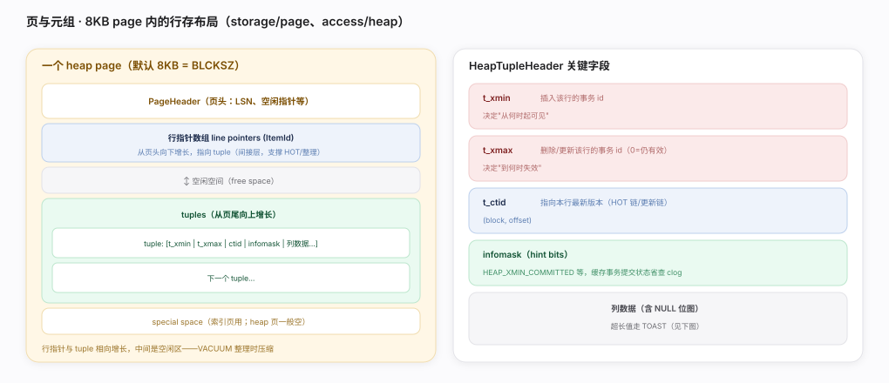
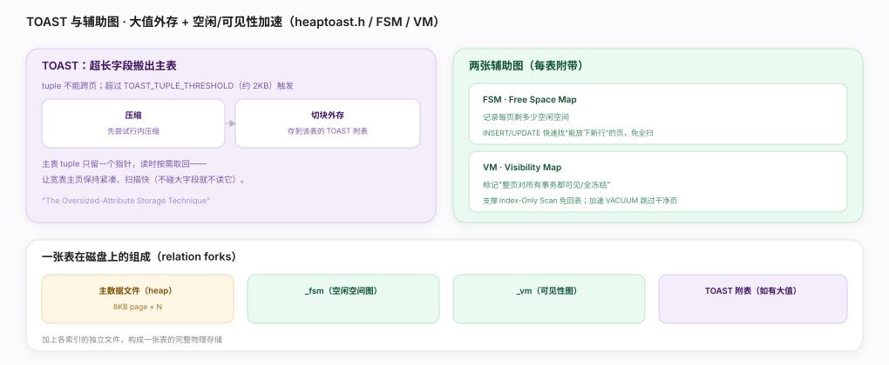
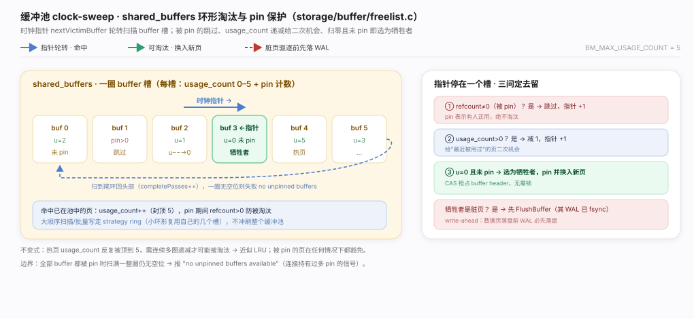
postgres/src（commit 572c3b2）。PageHeaderData 头 + 相向增长的行指针与 tuple + pd_lsn）里放多个 HeapTupleHeaderData（t_xmin/t_xmax/t_ctid/infomask，即 MVCC 与 HOT 的物理基础），页读写经 shared_buffers 缓冲池（ReadBuffer，clock-sweep 时钟扫描替换、脏页刷前先落 WAL）；超 ~2KB 的大字段由 heap_toast_insert_or_update 压缩/切片外置到 TOAST 附表，FSM 帮写找空闲页防膨胀、VM 支撑 Index-Only Scan 免回表与 VACUUM 跳过全冻结页——写不就地覆盖、死元组靠 VACUUM 回收是贯穿全篇的主线。shared_buffers：缓冲池大小（常设物理内存 25%）；effective_cache_size 告知优化器 OS+DB 总缓存。fillfactor：写多的表调低于 100 提高 HOT 命中、减少跨页更新。TOAST 策略与大字段拆分：按访问模式选 EXTENDED/EXTERNAL/MAIN。data_checksums：生产建议开，早发现静默坏页。| 场景 | 机理 | 后果 / 应对 |
|---|---|---|
| 页满与更新退化 | UPDATE 新版本放不下当前页则跨页、HOT 落空、所有索引加项 | 写放大；低 fillfactor 预留页内空间可缓解 |
| 缓冲池抖动 | 大顺序扫描用 BufferAccessStrategy 环形缓冲限制占用 | 避免一次大扫描冲刷整个 shared_buffers、热数据被挤出致后续全 miss |
| TOAST 读放大 | 频繁读切片外置大字段要多次访问 TOAST 附表 | 冷热字段分表，或用 EXTERNAL（不压缩、便于随机切片读）视访问模式而定 |
| 校验和与坏页 | 开 data_checksums 后读到 checksum 不符的页报错 | 拒绝返回脏数据防静默损坏，代价是写时算校验和 |
| 项 | 值/职责 | 锚点 |
|---|---|---|
| BLCKSZ | 默认 8KB 页 | 编译期常量 |
| PageHeaderData | 页头 + pd_lsn/pd_lower/pd_upper | storage/bufpage.h:184 |
| HeapTupleHeaderData | t_xmin/t_xmax/t_ctid/infomask | access/htup_details.h:153 |
| shared_buffers | 缓冲池（clock-sweep 替换） | storage/buffer/bufmgr.c:879 |
| TOAST | 大字段压缩/切片外置（>~2KB） | access/heap/heaptoast.c:96 |
| FSM | 空闲空间图，找有空位的页 | storage/freespace/freespace.c:137 |
| VM | 可见性图，支撑 IndexOnly/VACUUM 跳页 | access/heap/visibilitymap.c:319 |
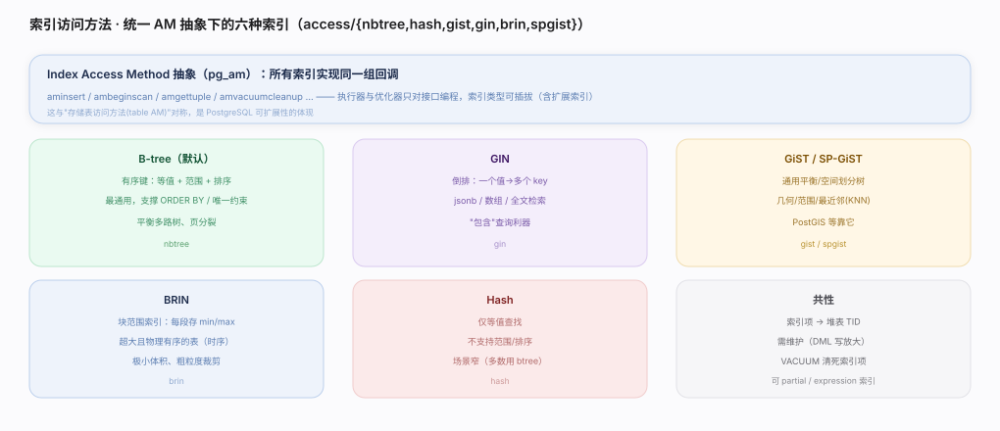
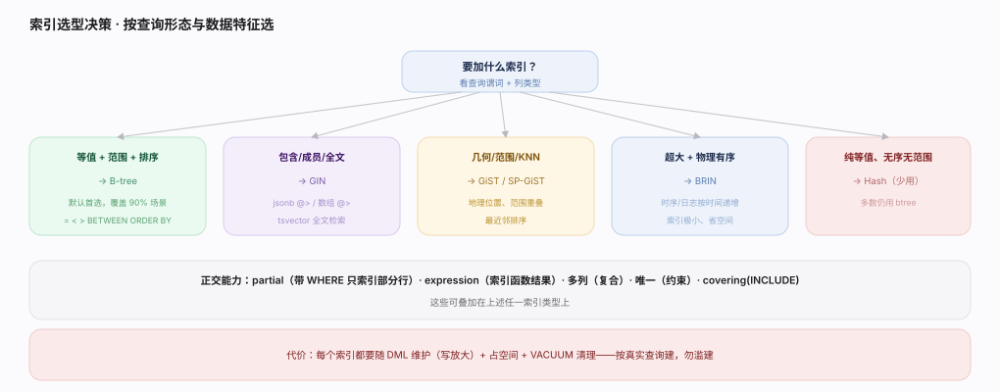
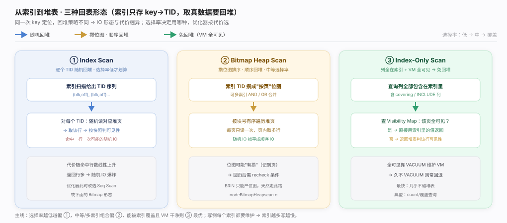
postgres/src（commit 572c3b2）。pg_am/IndexAmRoutine，通用入口 index_insert/index_beginscan/index_getnext_tid）下提供 B-tree（默认，_bt_search/_bt_first 二分定位）、GIN（倒排）、GiST/SP-GiST（通用/空间树）、BRIN（块范围粗裁剪）、Hash（等值）六型，索引项存 key→堆表 TID、扫描先定位再回表（借 VM 可 Index-Only 免回表）；选型看查询形态、用不用由优化器按选择率与代价定，配合部分/表达式/多列/覆盖索引——代价是每个索引都要在 DML 维护（写放大、膨胀），生产建索引用 CONCURRENTLY、膨胀后 REINDEX。CREATE INDEX CONCURRENTLY 不阻塞写。REINDEX CONCURRENTLY 重建；GIN 写重表调 fastupdate 参数。text_pattern_ops 操作符类或 pg_trgm。| 场景 | 机理 | 后果 / 应对 |
|---|---|---|
| 索引不被使用 | 选择率过高/统计陈旧/类型排序规则不匹配（LIKE 'abc%' 需 text_pattern_ops）/函数未用表达式索引 | 优化器弃用索引走 Seq Scan；EXPLAIN 是排查第一手段 |
| 写放大与膨胀 | 每个索引在非 HOT 更新时都要加新项 | 索引越多 UPDATE 越慢；B-tree 页分裂膨胀需 REINDEX CONCURRENTLY 重建 |
| CREATE INDEX 阻塞写 | 普通 CREATE INDEX 取 ShareLock 阻塞该表写 | 生产用 CREATE INDEX CONCURRENTLY（不阻塞写、非事务、中途失败留 INVALID 索引需 DROP） |
| 唯一约束冲突 | 唯一索引插入重复键时于 _bt_doinsert 报错 | 整语句回滚，执行期错误 |
| GIN 更新慢 | GIN 一行拆成很多 key、写入重 | 用 fastupdate+gin_pending_list_limit 攒批延迟合并缓解 |
| 索引 | 适用查询 | 特点 | 锚点 |
|---|---|---|---|
| B-tree | 等值/范围/排序/唯一 | 默认，最通用 | access/nbtree/nbtree.c:206 |
| GIN | 包含/全文/jsonb/数组 | 倒排，一值多 key，写较重 | access/gin/gininsert.c:865 |
| GiST | 几何/范围/KNN | 通用平衡树，可扩展 | access/gist/gist.c:166 |
| SP-GiST | 空间划分/前缀 | 非平衡分区树 | access/spgist |
| BRIN | 超大物理有序时序 | 段存 min/max，极小 | access/brin/brin.c:349 |
| Hash | 纯等值 | 场景窄 | access/hash/hash.c:271 |
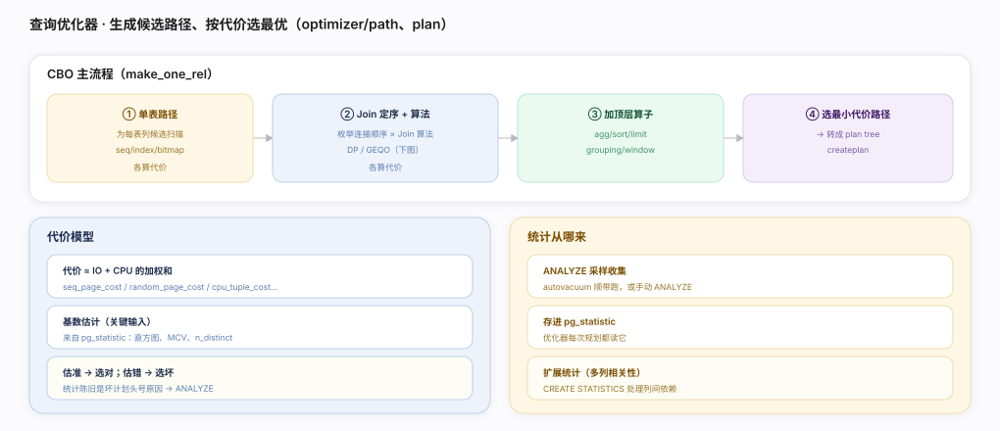
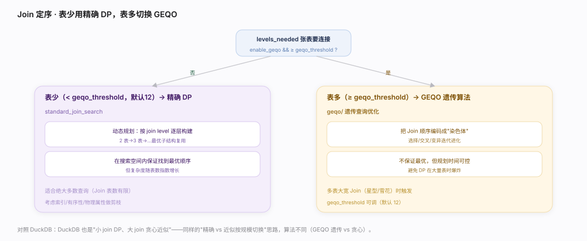
postgres/src（commit 572c3b2）。planner→make_one_rel 四步（单表路径→Join 枚举→顶层算子→选最小代价 create_plan 转 plan tree），代价用 cost_seqscan/cost_index 等按 IO+CPU 加权、核心输入是来自 pg_statistic（直方图/MCV/n_distinct）的基数估计（clamp_row_est）；Join 定序用 DP（standard_join_search 求全局最优）、表数超 geqo_threshold=12 切 GEQO 启发式换规划时间——统计陈旧与多列相关导致的估计失真是坏计划头号原因，用 ANALYZE + CREATE STATISTICS 修正、EXPLAIN ANALYZE 定位。CREATE STATISTICS。random_page_cost：SSD 上调低使索引更受青睐；effective_cache_size 告知总缓存。EXPLAIN (ANALYZE) 看估计 vs 实际行数误差，定位坏计划根因。geqo_threshold/geqo 控 GEQO 行为；plan_cache_mode 控泛化计划。default_statistics_target 调采样精度（倾斜列可对列单独调高）。| 场景 | 机理 | 后果 / 应对 |
|---|---|---|
| 基数估计崩塌 | 多列强相关（city 与 zip）时按列独立相乘估选择率、严重偏低 | 该 Hash Join 选成 Nested Loop 慢几个数量级；CREATE STATISTICS (dependencies, ndistinct) 或 pg_hint_plan |
| 统计陈旧 | 大批量导入/删除后未 ANALYZE，直方图/MCV 反映旧分布 | 坏计划；autovacuum 的 ANALYZE 触发有滞后，导入后应手动 ANALYZE |
| GEQO 非确定性 | 超阈值切 GEQO 后同一查询可能得不同计划（含随机性） | 稳定性敏感场景调高 geqo_threshold 或固定 geqo_seed |
| 规划开销反噬 | 表极多或 prepared 用 generic plan 时规划本身可能比执行慢 | plan_cache_mode 控 generic vs custom plan 选择 |
| 参数不敏感 | 预编译语句沿用泛化计划，遇倾斜参数（某值命中极多）选错扫描 | PG 在前几次执行后比较 custom/generic 代价再决定 |
| join_collapse_limit 截断 | FROM 超 join_collapse_limit（默认 8）表时不再展平、按书写序固定部分 Join | 可能错过更优序；手写大 Join 或视图嵌套深时需留意 |
| 组件 | 职责 | 锚点 |
|---|---|---|
| planner / standard_planner | 规划总入口 | optimizer/plan/planner.c:328 |
| make_one_rel | 路径生成主流程 | optimizer/path/allpaths.c:183 |
| standard_join_search | DP Join 定序 | optimizer/path/allpaths.c:3952 |
| GEQO（阈值 geqo_threshold=12） | 超多表启发式定序 | allpaths.c:3915 |
| costsize（cost_seqscan/cost_index） | 代价模型 | optimizer/path/costsize.c:271/546 |
| clamp_row_est | 基数夹取 | optimizer/path/costsize.c:215 |
| pg_statistic | 直方图/MCV/n_distinct | ANALYZE 收集 |
| create_plan | path→plan tree | optimizer/plan/createplan.c:345 |
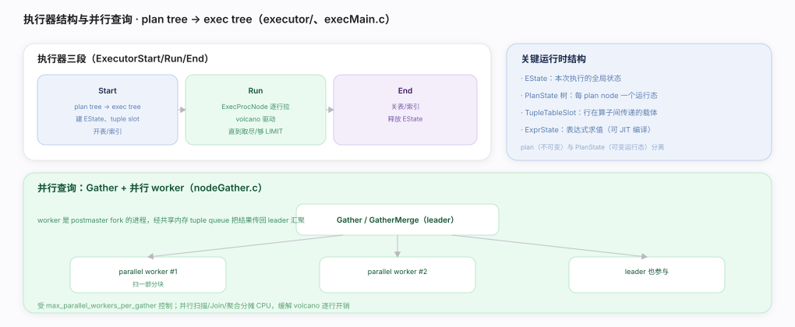
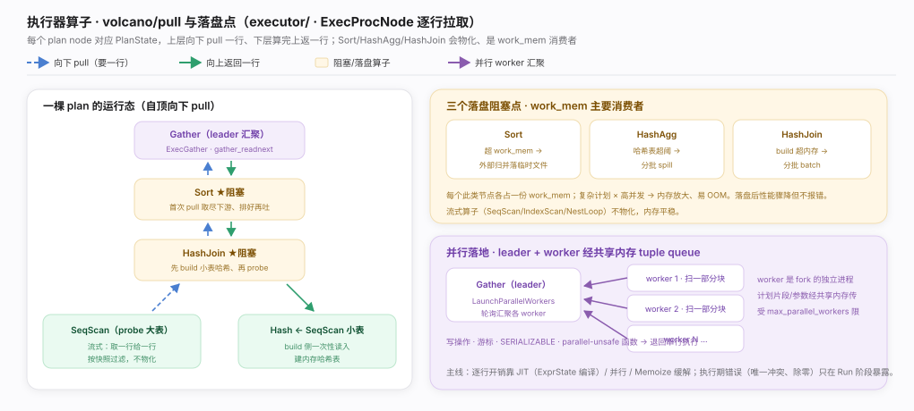
postgres/src（commit 572c3b2）。ExecutorStart(InitPlan 建 exec tree/EState/TupleTableSlot)→ExecutorRun→ExecutorEnd 三段执行，内部是火山/pull 模型：每 plan node 对应 PlanState、经 ExecInitNode/ExecProcNode/ExecEndNode 逐行拉取、表达式用 ExprState（可 JIT）求值；并行查询由 ExecGather leader 汇聚 fork 出的 parallel worker 经共享内存 tuple queue 传回的结果分摊多核——逐行开销靠 JIT/并行/Memoize 缓解，work_mem 不足会落盘退化、写/游标/不安全函数会退回串行、执行期错误只在 Run 阶段暴露。work_mem：排序/Hash 内存上限，不够则落盘；注意乘算子数与并发。max_parallel_workers_per_gather / max_parallel_workers：开并行、控并行度。jit/jit_above_cost）：大查询表达式编译提速，小查询关掉省编译开销。EXPLAIN (ANALYZE, BUFFERS)：看每算子真实行数/耗时/落盘与缓冲命中。jit_above_cost 阈值控。| 场景 | 机理 | 后果 / 应对 |
|---|---|---|
| work_mem 落盘退化 | Sort/HashAgg/HashJoin 内存超 work_mem 切外部归并/落盘临时文件 | 性能骤降；每个此类算子各占一份 work_mem，复杂计划 × 高并发易 OOM |
| 并行的启动与限制 | worker 是 fork 进程有启动成本；写/游标/SERIALIZABLE/parallel-unsafe 函数退回串行 | 小查询不值得并行；worker 数受 max_parallel_workers/max_worker_processes 池限制，池耗尽拿不满并行度 |
| 执行期错误 | 唯一约束冲突、除零、类型转换失败只在 Run 阶段暴露 | 触发事务回滚；EXPLAIN（不带 ANALYZE）只走计划不执行看不到 |
| 游标即长快照 | Portal 持有的游标沿用其快照 | 长时间不关等价长事务、压住死元组回收 |
| 组件 | 职责 | 锚点 |
|---|---|---|
| ExecutorStart/Run/End | 执行三段 | executor/execMain.c:124/308/477 |
| InitPlan | plan→exec tree、建 EState | executor/execMain.c:847 |
| ExecInitNode/ExecProcNode/ExecEndNode | 算子 Init/Proc/End 回调 | executor/execProcnode.c:142/448/543 |
| PlanState / EState / TupleTableSlot | 运行态/全局态/行载体 | executor/ |
| ExprState（可 JIT） | 表达式求值 | jit/ |
| ExecModifyTable | 写算子 | executor/nodeModifyTable.c:4625 |
| ExecGather / gather_readnext | 并行 leader 汇聚 | executor/nodeGather.c:138/312 |
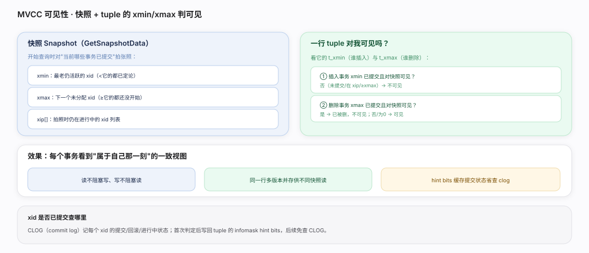
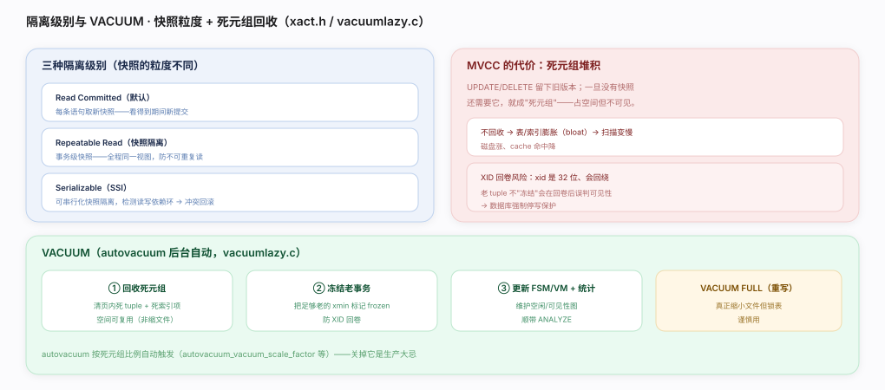
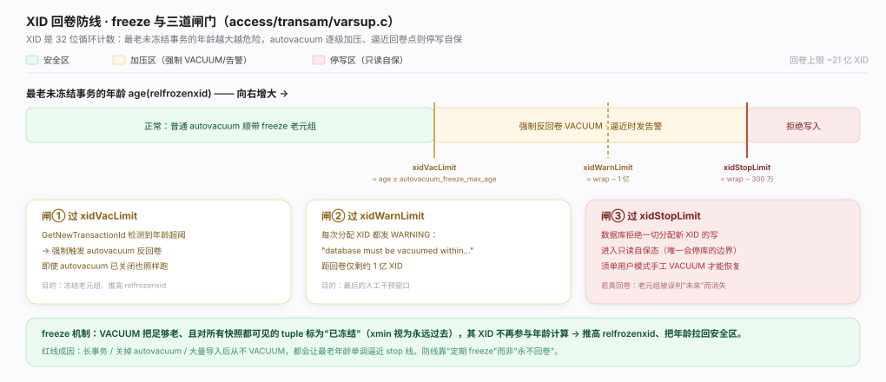
postgres/src（commit 572c3b2）。GetSnapshotData）+ 每行 tuple 的 t_xmin/t_xmax 判可见性（HeapTupleSatisfiesMVCC），XID 提交状态存 CLOG 并以 hint bits 缓存，实现读写互不阻塞与三种隔离级别（RC/RR/Serializable，后者叠加 SSI 依赖检测）；代价是 UPDATE/DELETE 留下的死元组，由 autovacuum 后台 lazy_scan_prune/lazy_vacuum 回收空间、冻结老事务防 XID 回卷、维护 FSM/VM——长事务阻止回收、关闭 autovacuum、逼近 XID 回卷阈值都是会导致膨胀甚至整库停写的生产红线。autovacuum_vacuum_scale_factor、autovacuum_vacuum_cost_limit 等）。age(relfrozenxid)），临近回卷阈值前主动 VACUUM (FREEZE)。fillfactor 提高 HOT 更新比例，减少版本与索引膨胀。| 组件 | 职责 | 源码锚点 |
|---|---|---|
| GetSnapshotData | 遍历 ProcArray 取快照（xmin/xmax/xip） | storage/ipc/procarray.c:2114 |
| HeapTupleSatisfiesMVCC | 按快照判一行可见性 | access/heap/heapam_visibility.c:939 |
| SetHintBits | 判定结论写回 infomask（缓存 CLOG） | access/heap/heapam_visibility.c:199 |
| TransactionIdGetStatus | 查 CLOG 事务提交状态 | access/transam/clog.c:743 |
| TransactionIdIsInProgress | 判 XID 是否仍活跃 | storage/ipc/procarray.c:1393 |
| lazy_scan_prune | VACUUM 页内剪枝 | access/heap/vacuumlazy.c:2021 |
| heap_page_prune_opt | 读路径上的机会式剪枝 | access/heap/pruneheap.c:272 |
| CheckForSerializableConflictOut | SSI 读写依赖检测 | storage/lmgr/predicate.c:3952 |
| 场景 | 机理 | 后果 / 应对 |
|---|---|---|
| XID 回卷停写 | relfrozenxid 年龄逼近 autovacuum_freeze_max_age 触发强制反回卷 VACUUM | 再逼近 xidStopLimit 整库进只读拒写保护态，须单用户模式 VACUUM 恢复——MVCC 唯一让整库停摆的边界 |
| 长事务压住回收 | ComputeXidHorizons 算的全局可回收水位取决于最老快照 | 一个空闲未提交事务把水位钉死，其后死元组无法回收、膨胀失控 |
| hint bits 放大写 | hint bits 由第一个访问该 tuple 的查询回写（SetHintBits） | 一次大 SELECT 引发大量页变脏、连带 WAL；批量导入后首次全表扫描"莫名"变慢 |
| SSI 序列化失败 | Serializable 检测到依赖环主动 could not serialize access | 应用需捕获重试；跟踪读写依赖本身有内存与 CPU 开销 |
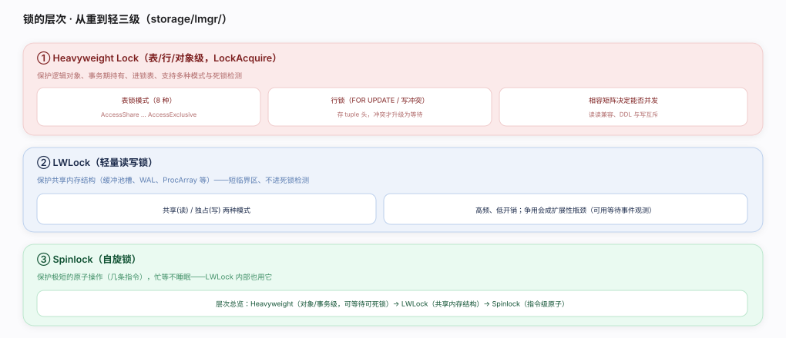
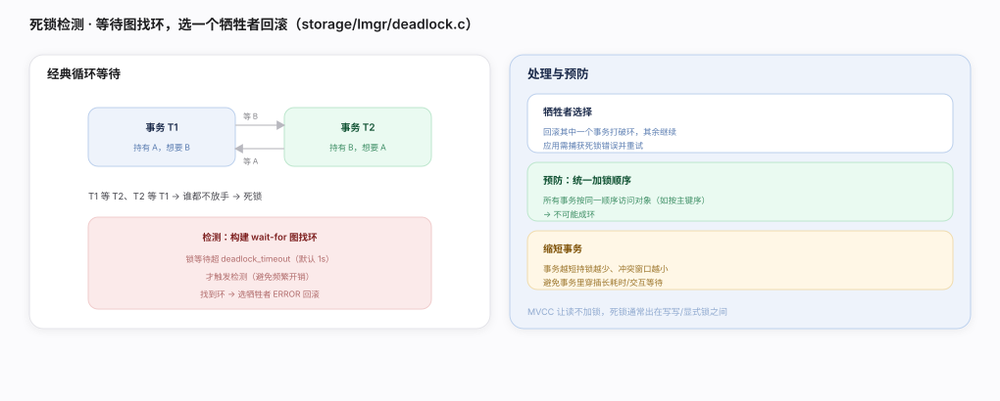
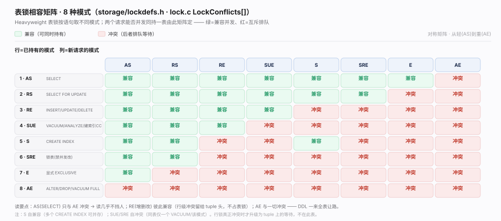
postgres/src（commit 572c3b2，storage/lmgr/）。LockAcquire，表/行/对象、8 种模式相容矩阵、事务期持有、可死锁、fast-path+分区降争用）保护逻辑对象、LWLock（LWLockAcquire，共享/独占、约定顺序无死锁）保护共享内存结构、Spinlock 保护原子片段；死锁不预防而检测——等锁超过 deadlock_timeout(1s) 后 DeadLockCheck/FindLockCycle 在等待图找环、选牺牲者回滚，Serializable 另有 SSI 谓词锁检测读写依赖环报序列化失败；生产要点是统一加锁顺序防死锁、DDL 设 lock_timeout 防重锁雪崩、监控 pg_locks 与热点 LWLock 争用。lock_timeout，防重锁排队引发查询雪崩。deadlock_timeout 一般不必调（1s 默认合适）；死锁频发应改应用逻辑。pg_locks 与等待事件（pg_stat_activity.wait_event）定位热点 LWLock/阻塞链。max_locks_per_transaction，防锁表耗尽。| 场景 | 机理 | 后果 / 应对 |
|---|---|---|
| 死锁经典成因 | 两事务以相反顺序更新同一批行 | 约定统一加锁/更新顺序、缩短事务、必要时显式 SELECT ... FOR UPDATE 一次性取全 |
| 锁等待雪崩 | 取 AccessExclusiveLock 的 ALTER 被长事务挡住、排队时又挡住其后所有新查询 | 瞬间连接耗尽；上线 DDL 务必设 lock_timeout |
| LWLock 争用瓶颈 | 高并发写下 WALInsertLock/ProcArrayLock 等热点 LWLock 争用 | CPU 空转在自旋/等待；从减少写热点、分区表、连接池缓解，非应用能直接调 |
| 锁表内存耗尽 | max_locks_per_transaction ×(max_connections+prepared) 定共享锁表容量 | 一事务锁定海量对象（DROP 大量分区）可能 out of shared memory |
| 咨询锁泄漏 | pg_advisory_lock 忘记 unlock 或误用 session 级会话锁 | 长期占用需手动清理 |
| 等待可视化 | pg_stat_activity.wait_event 标出等哪类锁（Lock/LWLock/BufferPin） | pg_locks+pg_blocking_pids() 还原"谁挡了谁"阻塞链——排查卡顿第一现场 |
| 层 | 保护对象 | 死锁检测 | 锚点 |
|---|---|---|---|
| Heavyweight Lock | 表/行/对象（8 种模式） | 有（超时后建图找环） | storage/lmgr/lock.c:806 |
| LWLock | 共享内存结构（缓冲/WAL/ProcArray） | 无（约定加锁顺序） | storage/lmgr/lwlock.c:1150 |
| Spinlock | 极短原子操作 | 无（忙等） | storage/lmgr/s_lock.c |
| 死锁检测 | 等待图找环 | deadlock_timeout=1s 触发 | storage/lmgr/deadlock.c:220 |
| SSI 谓词锁 | 读写依赖环 | 序列化失败 | storage/lmgr/predicate.c:3952 |
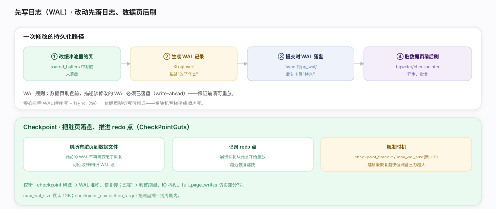
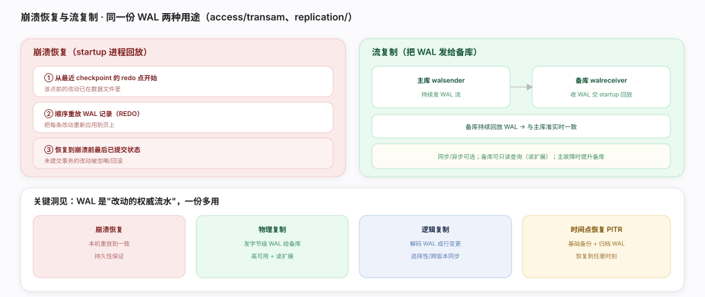
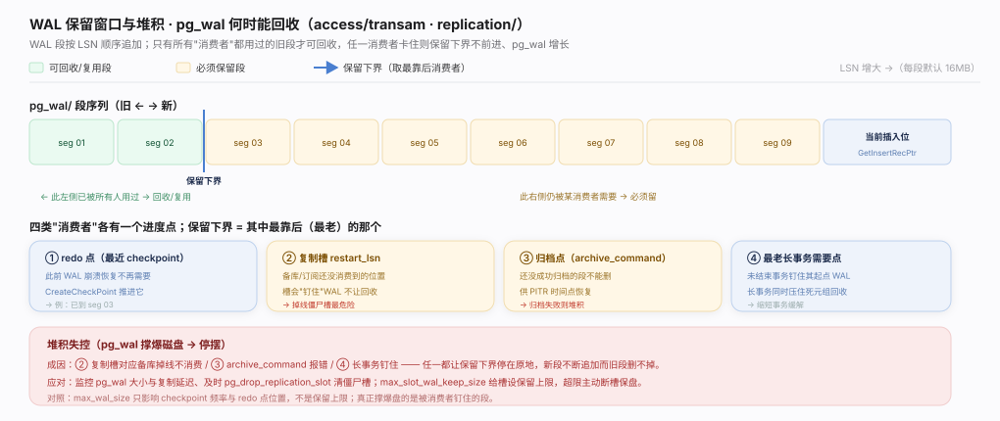
postgres/src（commit 572c3b2）。XLogInsert，写入页 pd_lsn）顺序写并在提交时 fsync 落盘（write-ahead：数据页刷盘前其 WAL 必先落盘），脏数据页由 checkpointer/bgwriter 异步刷、CreateCheckPoint→CheckPointGuts 定期刷全脏页并记 redo 点（受 max_wal_size=1GB 等触发）；崩溃时 startup 进程 StartupXLOG→PerformWalRecovery 从 redo 点回放 WAL 恢复一致状态，同一份 WAL 经 walsender→walreceiver 驱动物理流复制/hot standby/PITR/逻辑复制——把随机写摊成顺序写换来快提交，但归档失败或僵尸复制槽会让 WAL 堆满磁盘、异步复制存在 RPO 丢数据窗口。max_wal_size/checkpoint_timeout/checkpoint_completion_target：平衡 checkpoint 频率与刷盘尖峰、恢复时间与占盘。synchronous_commit：吞吐 vs 持久性权衡；关键数据用同步复制换零丢失。wal_compression/wal_level：控 WAL 体积与复制/归档能力（replica/logical）。pg_wal/ 大小、归档成功率；及时清理僵尸复制槽。| 场景 | 机理 | 后果 / 应对 |
|---|---|---|
| fsync 失败 | WAL fsync 报错="以为持久的其实没落盘" | PG panic 重启保守处理；底层存储须诚实实现 fsync（云盘/RAID 卡谎报缓存曾致丢数据） |
| WAL 堆积撑爆磁盘 | 归档失败 / 复制槽备库掉线不消费 / 长事务钉住 | pg_wal/ 无限增长写满盘停摆；僵尸槽最危险，及时 pg_drop_replication_slot、设 max_slot_wal_keep_size |
| checkpoint 尖峰 | max_wal_size 太小→频繁 checkpoint 刷盘打满 IO | 拖慢前台；太大则恢复慢占盘多，用 checkpoint_completion_target 摊平 |
| 备库回放延迟 | 备库单进程回放跟不上主库高写入 | 只读查询看旧数据；hot_standby_feedback 会让备库长查询反压主库阻止死元组回收 |
| 异步复制丢数据 | synchronous_commit=off 或异步备库 | 主库崩溃丢尚未传到备库的已提交事务，RPO 非零，按业务容忍度选同步级别 |
| 组件 | 职责 | 锚点 |
|---|---|---|
| XLogInsert | 插入 WAL 记录、返回 LSN | access/transam/xloginsert.c:482 |
| CreateCheckPoint / CheckPointGuts | 刷脏页、记 redo 点 | access/transam/xlog.c:7400/8049 |
| StartupXLOG / PerformWalRecovery | 崩溃恢复回放 WAL | xlog.c:5845 / xlogrecovery.c:1612 |
| walsender / XLogSendPhysical | 主库发 WAL 流 | replication/walsender.c:850/3350 |
| walreceiver | 备库收 WAL 流 | replication/walreceiver.c:154 |
| max_wal_size（默认 1GB） | checkpoint WAL 阈值 | access/transam/xlog.c:121 |